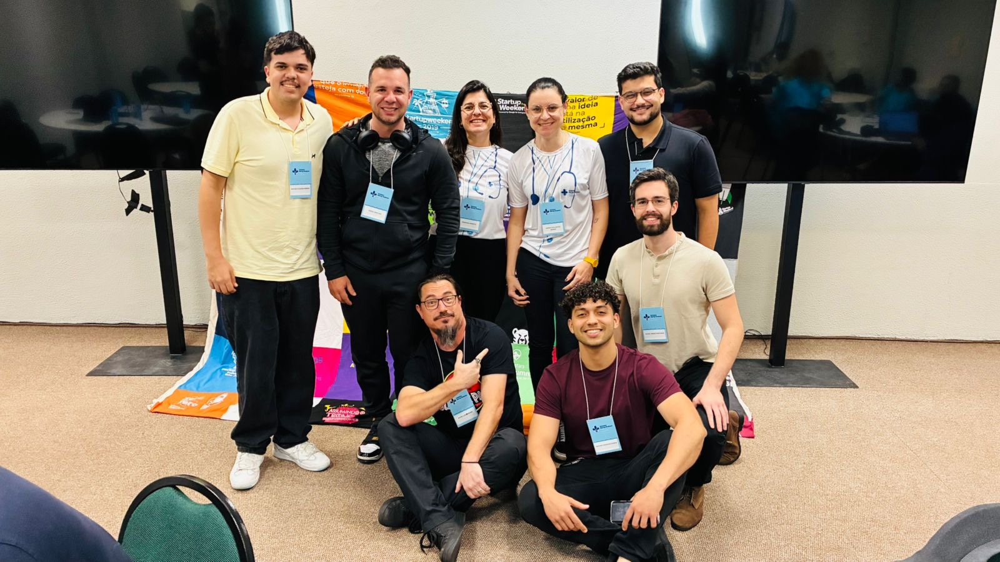

⚡
🚀
💻
☕
🏁
🧭

Maratonista de Código
Adoro o desafio de Hackathons. Transformar uma ideia abstrata em um produto real em 54 horas me ensinou mais sobre resiliência e trabalho em equipe do que qualquer manual.